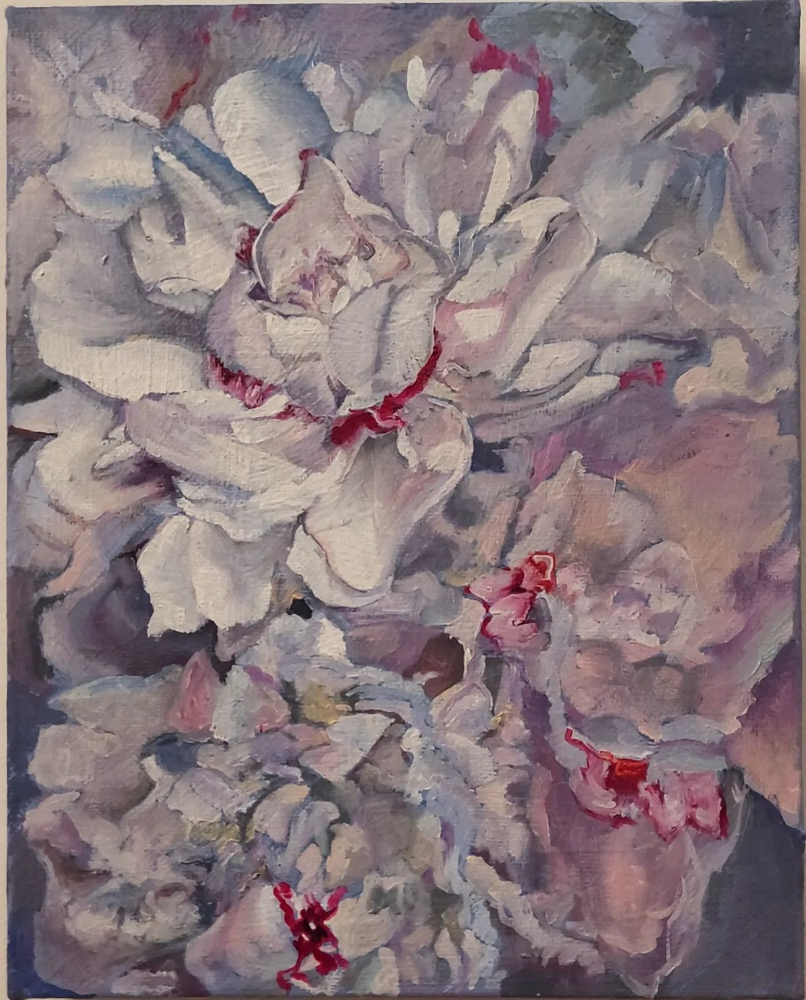

A gallery of my paitings
I have been a painter since 2017, after the stimulating encounter with professional painter Guido Buganza.
In 2018, I have won the “Looking for Art” paiting contest, which allowed me to exibithion my paintings at Milan “La Triennale”. In 2019, I had my first personal exibithion at Spazio Arte Tirabassi (Milan).
Monologues (actors on actors)
Some portraits of my actor friends. This was part of a personal exhibition back in 2019.
Portraits inspired by my family
still-life (many bottles)
Early oil works

Study of famous paitings
Acrilyics

Address:
655 Huntington Ave, Boston, MA 02115, United States
Email:
azito@hsph.harvard.edu
Links: